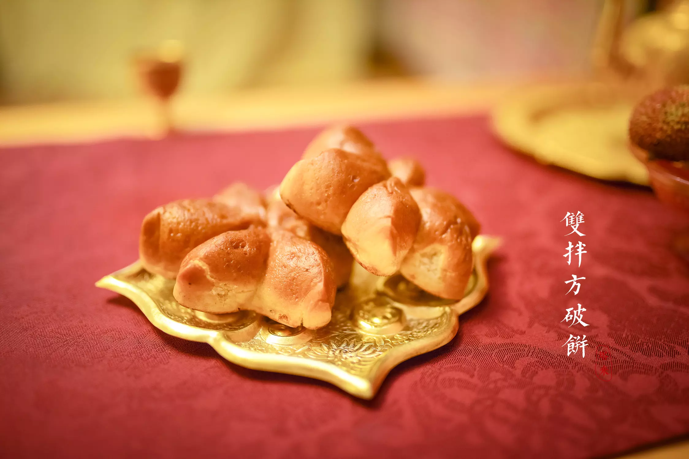

痴梦
我们每晚都在睡梦中度过，或喜或悲。在梦中，一个女子乘一 叶扁舟，手执团扇，于绿野阡陌中行走，看春华秋实，赏良辰美景，偶然间，在河对岸看到一个樵 夫，他朝这边望着，不知在看些什么？樵夫对那个女子一见钟情，想要追求她。可碍于江面宽广， 他不能涉水而去，只有独自悲伤。第二天，继续砍柴，想到如果那个女子嫁给我的话，我一定要将 辕马喂饱，驾着车去迎接她的到来，只可惜，这只是他的一厢情愿。他即使能到达对面，那个女子 会喜欢他吗？女子的家人会同意吗？这都是很现实的问题，无论在现代还是古代，事实永远都是很 残酷的。我们要做好准备来迎接将要发生的事。时光似流水，如她韶华已逝，他还会喜欢她吗？人 是感性与理性兼并的动物，大多数人都会被表面的繁华所吸引，而忘记最本质的。到最后，你想要 的，只不过是痴梦一场。
汉服与美食

画里大唐，梦里华裳。——来这里，做一日大唐人。不会跳舞的 簪娘不是好妆娘——在上海，有一位叫姝程的姑娘，开了沪上首家唐代生活体验馆——姝影轩，唐风的 布景，复原的唐代服饰，均是独特而又令人神往。姝程是塔米最早认识的一批同袍，在她的生活里， 除了汉服之外，吃也是一个必不可少的东西。偶然的一天，她突然冒出了一个将吃与体验结合在一 起的念头，于是乎，查资料，试做试吃……说到唐代美食，不得不提烧尾宴。烧尾宴是唐代长安曾经 盛行过的一种特殊宴会。这一看来奇怪的名称，来源有三种说法：一说老虎变成人时，要烧断其尾； 二说羊入新群，要烧焦旧尾才被接纳；三说鲤鱼跃龙门，经天火烧掉鱼尾，才能化为真龙。烧尾宴 上美味陈列，佳肴重叠，是中国欢庆宴的典型代表，足堪与“满汉全席”相媲美。五代时陶谷的《清 异录》一书，记载了唐代最著名的一次烧尾宴。
海棠春睡
丁酉初夏邀若以、倾寒与56同去帽峰山王老师家小聚游玩，进 得小院柴门即见满院海棠花盛开，即兴为若以拍海棠照为记。海棠花素有“国艳”之誉，更有“花之贵 妃”的美称，唐代时，海棠的地位有了很大的提升，唐明皇曾将杨贵妃比作海棠花。海棠花来自四 川，故东坡对海棠花情有独钟，咏她的作品非常多。有诗句如：只恐夜深花睡去，故烧高烛照红妆； 又如：可怜俗眼不知贵，空把容光照山谷。等等。石崇见海棠，叹曰：若使海棠能香，当铸金屋以 藏。 曹雪芹亦曾谓人生四大憾事：一憾鲥鱼鲜美却多刺，二憾莼菜为汤味美而性寒，三憾曾巩能文 不能诗，四憾海棠色美而无香。其韵白海棠诗： 半卷湘帘半掩门，碾冰为土玉为盆；偷来梨蕊三分 白，借得梅花一缕魂月窖仙人缝缟裤，秋闺怨女拭啼痕；娇羞默默同谁诉？倦倚西风夜已昏。据考， 杜工部是因其母亲之讳而不作海棠诗。
相思，是一种距离
从小，就听过这样一句话“关关雎鸠，在河之洲，窈窕淑女， 君子好逑。”只知是对异性表示好感的，其本身的场景并未深究。在细碎的流年里，辗转看到友人赠 我的一张明信片上写了这首诗歌，让人有种重遇失落已久的温暖。我静坐窗前，看着细雨绵绵的天 空，心神恍惚，又回到那个场景。在一个阳光明媚的四月天里，人们出外踏青的好时节。河边站着 一位女子，她把手帕放在河水中搓洗，阳光映照在她如花的笑脸上，河对岸有一个风度翩翩的男子， 痴迷的看着。当女子洗完后，起身便看到了此人，羞红了脸。忽然，一个身穿素白色长裙的女子喊 道“子洛，时间到了，赶快回家吧!要不然娘又该骂我们贪玩了。”佳人渐行渐远，男子带着满心的思 念回到家中。晚上睡觉时总是翻来覆去的睡不着，脑海里还是那佳人身影。我朝思暮想的少年，你 在对面吗？
婚嫁，愿得一人心
塞北，这两天似乎格外寒冷，原先只是身着衬衫，今天换上了 浅灰色卫衣，适应着气候。晚饭间，听妈妈说，今年会很冷，比往年更甚之。今天，阅读了《诗经》 中的名篇《桃夭》。首句“桃之夭夭，灼灼其华。”是我最熟悉的一句。因为它的比喻意是形容女子 的容貌像桃花那样美丽。比起“貌美如花”这个词来说更胜一筹。烟花三月，桃花开得正茂。在一户 人家中，招罗着女儿要出嫁的事宜。成亲，是一个女子一生中最美的时刻。她要与男子组成新家庭， 过着幸福快乐的日子，她的父母也会因为女儿幸福而感到开心。人的一生，所不断追求的，不就是 “幸福”二字吗？与恋人相遇、相知、相恋到成亲，在这个过程中学会彼此信任、包容、关心、责任， 也是"爱"这个字的根本意义。桃子和叶子，一个饱满丰硕，一个浓密有光华，都是最好的。祝愿这 位出嫁的女子幸福、安康。流年的时光，愿得一人心，白首不相离。